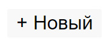
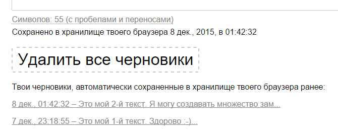
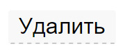
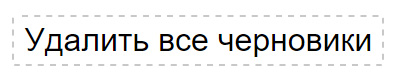
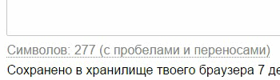

Онлайн блокнот в веб-браузере
JustNotepad.com это бесплатный онлайн блокнот в твоем веб-браузере. С JustNotepad.com ты можешь создать любые текстовые заметки (идеи, to-do-лист/список дел, ссылки, или любой другой простой текст), которые хотелось бы записать просто через веб-интерфейс, не выходя из браузера.
— Работает онлайн в браузере;
— 100% бесплатный онлайн сервис;
— Не требует авторизации, не требует регистрации;
— Автосохранение твоего текста (как черновик);
— Много-страничный;
— Управление черновиками;
— Подсчет символов и слов в тексте;
— Простой веб-интерфейс;
Автосохранение
Этот простой онлайн блокнот имеет функцию автосохранения и позволяет тебе восстановить твой текст «как черновик», даже если ты закрыл свой браузер/окно или вкладку браузера (если это возможно технологически и поддерживается веб браузером). Таким образом, ты можешь легко вернуться к своим текстовым заметкам в любое время снова.
Управление черновиками
JustNotepad.com позволяет создать множество черновиков (страниц).
Чтобы создать еще один новый текст (черновик) — просто нажми кнопку «+ Новый» в верхней части веб-интерфейса. Это откроет новую вкладку браузера. Далее, перейди к новой вкладке браузера, чтобы начать писать новый текст. Таким образом, ты можешь использовать дополнительный функционал своего веб-браузера, используя несколько открытых «вкладок браузера», чтобы использовать каждый черновик (текст) в отдельной «вкладке браузера».

Ты можешь всегда переключаться между всеми своими черновиками.
Список всех твоих черновиков доступен снизу под текстовой областью, в любое время и только для твоего устройства. Каждый черновик (в списке черновиков) имеет «дату последнего изменения», чтобы легко идентифицировать черновик.

Чтобы удалить текущий текст (который отображается в текстовой области) просто нажми кнопку «Удалить» в верхней части веб-интерфейса.

Чтобы удалить все свои черновики полностью (в т. ч. текст в текстовой области) — просто нажми кнопку «Удалить все черновики» (которая доступна снизу под текстовой областью).

Подсчет символов и слов в тексте
Онлайн блокнот автоматически подсчитывает количество символов и слов по мере набора текста, снизу под текстовой областью.
По умолчанию отображается «подсчет символов». Если ты хочешь подсчитать количество слов, просто нажми по счетчику, чтобы переключиться на «подсчет слов».
